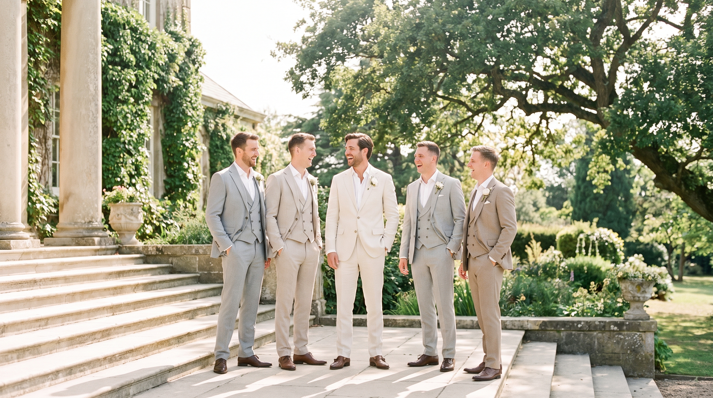
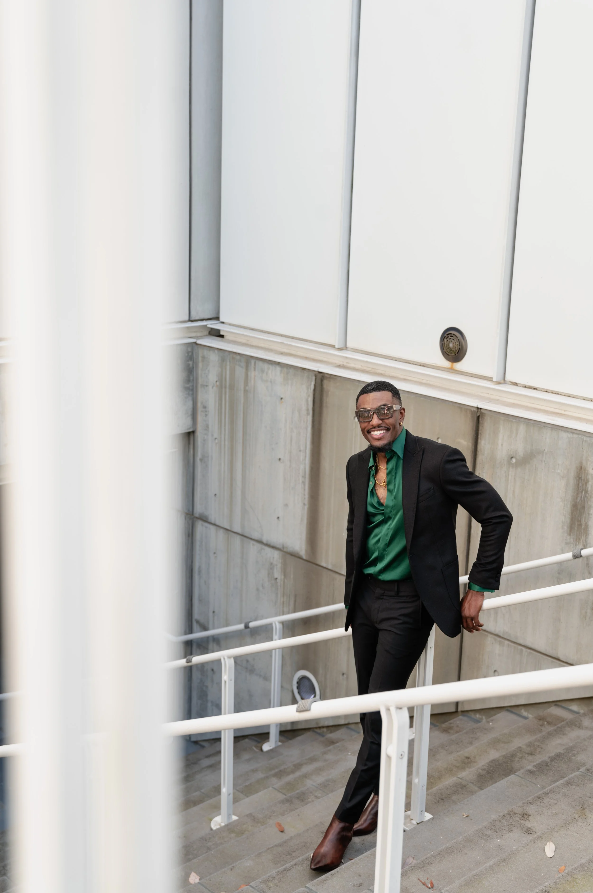
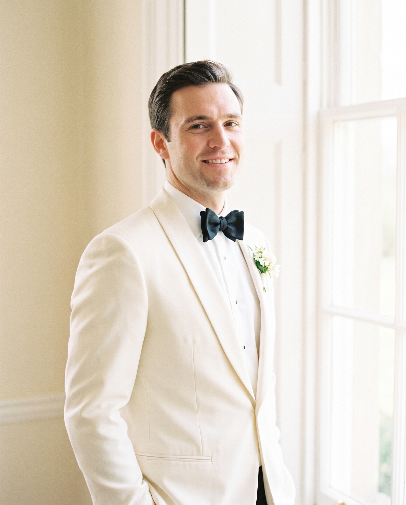
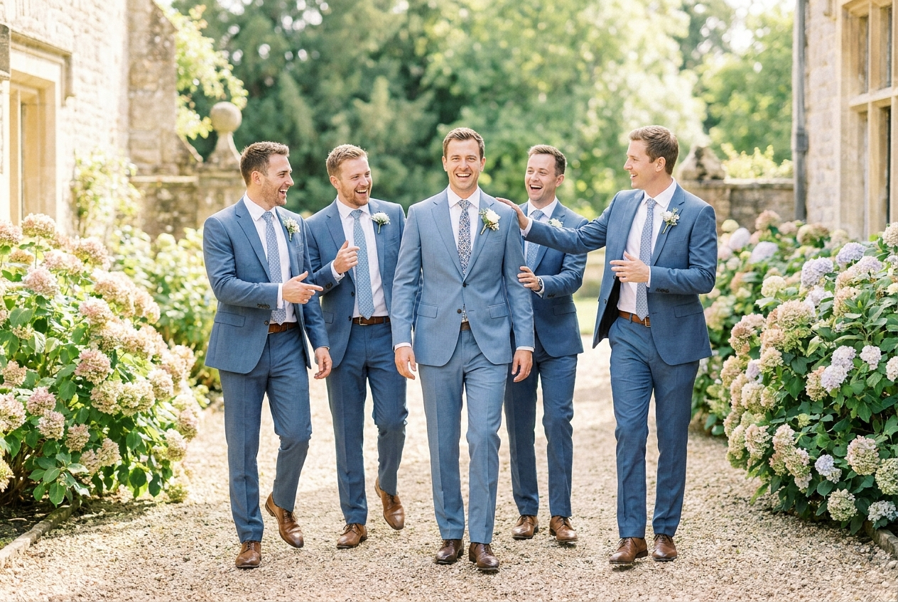
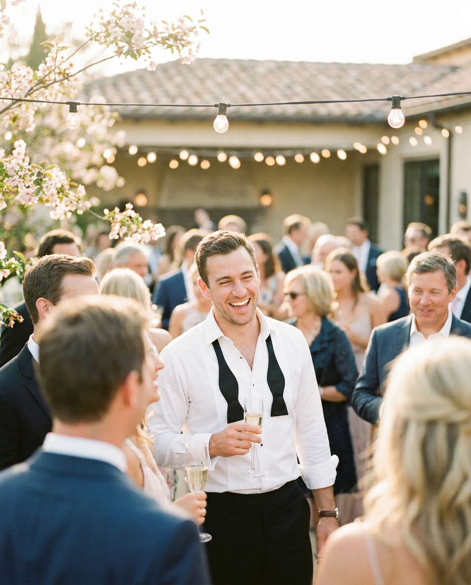
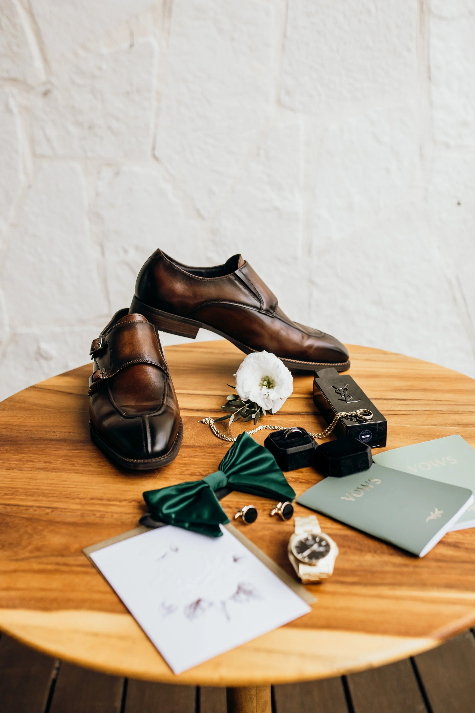
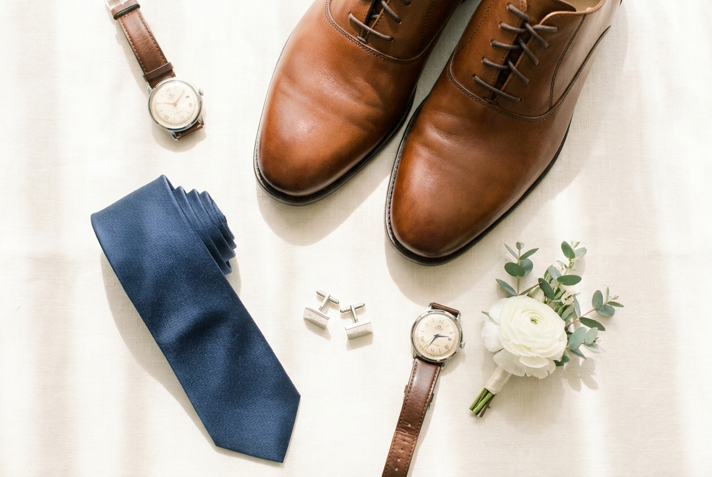

NOIR
NOIR

For the groom, his groomsmen, and the celebration after — bespoke suiting made for the one day you will remember forever.

A NOIR groom · AtlantaOn the best day of your life, you should wear something made only for you — and for no one else, ever.
A wedding suit is worn in every photograph you will keep for the rest of your life. We treat it that way. From the first conversation to the final press, your commission is unhurried, personal, and built by hand — so that when you turn to face the room, the suit is the last thing you have to think about.
How It Works
A single, uncompromising commission for the man of the day — tuxedo or suit, cut to you alone, with a lining and monogram known only to you.

A coordinated party, measured individually for a flawless fit — matching cloth, ties and pocket squares, delivered together, without the stress.

A second look for when the jacket comes off and the night begins — a relaxed, celebratory change of pace, made to move.
Begin four to six months ahead. Every stage is private and unhurried — and we keep the timeline so you don't have to.
A conversation over coffee or whisky about the day, the venue, the palette, and the look you want to remember.
Choose from over a thousand fabrics from English and Italian mills — with linings, buttons, and a hidden monogram.
Thirty-plus measurements and a body profile — with the whole party measured individually for a matched fit.
A muslin fitting, then refinements, with micro-adjustments as the date approaches so the fit is exact.
The finished suit, pressed and delivered in a premium NOIR wedding garment box — the party's coordinated and ready.
Optional white-glove service — deadline reminders, color matching, groomsmen coordination, and calm on the day itself.



Reserve your date early — bespoke wedding commissions are limited each season, one client at a time.